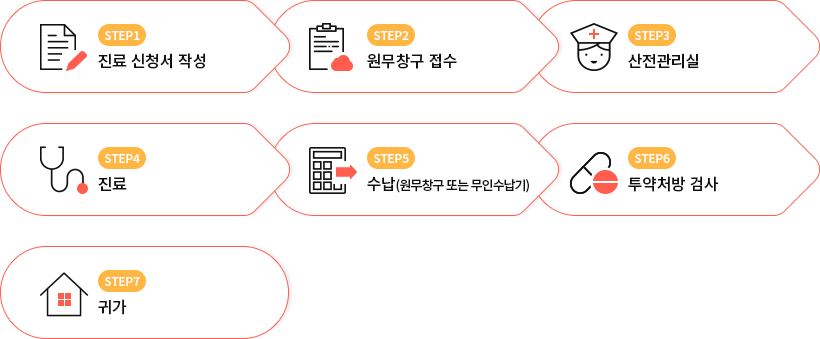

산모진료
일산차병원은 임신을 알리는 시기부터 아기가 태어날 때까지 엄마와 태아의 건강을 위해
보다 체계적이고 긴밀한 진료를 위해 일반외래 진료와는 별도로 임신부를 위한 산전관리실을 운영하고 있습니다.
궁금하신 사항은 전화주시면 답변해 드리겠습니다.
산전 관리실 안내 031-000-0000(미정)
보다 체계적이고 긴밀한 진료를 위해 일반외래 진료와는 별도로 임신부를 위한 산전관리실을 운영하고 있습니다.
궁금하신 사항은 전화주시면 답변해 드리겠습니다.
산전 관리실 안내 031-000-0000(미정)
- 접수 및 진료절차
- 
- 임신 10주이상 산모안내
-
- 7층 원무팀에서 진료 신청서를 작성하여 건강 보험증과 신분증을 함께 제출하고 진찰료 수납 후 영수증을 발급 받습니다.
- 산전 관리실 옆 테이블에 마련되어 있는 견본을 보면서 산전 기록부를 꼼꼼히 작성하여 산전 관리실 간호사에게 제시합니다.
- 혈압과 체중, 소변 검사 후 그 결과를 간호사로부터 확인 받습니다.
- 산전실내 초진실에서 진료와 관련된 상담을 받습니다.
(주치의 결정, 병원 이용 안내, 분만 관련 교육안내, 제대혈 신청 등…) - 상담이 끝나면 간호사가 진료실까지 안내를 합니다.
- 재진 산모안내
-
예약된 경우 - 영수증 하단에 있는 진료 예약증을 가지고 산전실로 갑니다.
- 정기 검진시 해당되는 혈압, 체중, 소변 검사를 합니다.
예약이 안된 경우
전화 예약 하신 경우- 원무팀에서 접수한 뒤 진료접수증을 지참하여 산전실로 갑니다.
- 정기 검진시 해당되는 혈압, 체중, 소변 검사를 합니다.
- 초음파 예약이 되어 있는 경우, 초음파 촬영 후 진료실로 갑니다.